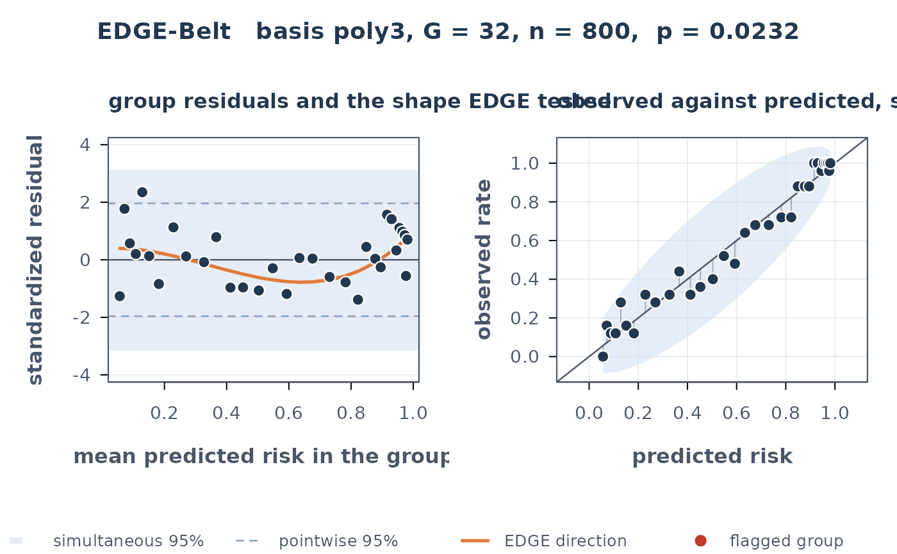

Returns, and draws, the group-level quantities that edge.gof
(def.gof) computes and then discards: the standardized grouped
residuals, their estimation-adjusted null standard deviations, the shape the
test projects onto, and the bands that say which groups are out of line.
The p-value reported with the belt is the one def.gof() itself returns,
so the picture and the test cannot disagree.
Usage
edge.belt(
object,
predicted_probs = NULL,
X = NULL,
G = "auto",
basis = c("poly3", "poly2", "stukel", "sym"),
weights = c("unit", "score"),
method = c("satterthwaite", "imhof"),
external = FALSE,
level = 0.95,
nsim = 20000L,
seed = NULL
)
# S3 method for class 'edge_belt'
print(x, ...)
# S3 method for class 'edge_belt'
plot(x, which = c(1, 2), main = NULL, palette = NULL, ...)Arguments
- object
A fitted binary logistic
glm, or a binary (0/1) response vector (then supplypredicted_probs).- predicted_probs
Numeric predicted probabilities; required when
objectis not a glm.- X
Optional design matrix, used for the estimation adjustment when
objectis not a glm. Without it the belt falls back to \(\Omega = I\), which gives conservative (too wide) bands.- G
Number of equal-frequency groups, or
"auto"formax(10, ceiling(n/25)). Default"auto".- basis
Shape basis:
"poly3"(default),"poly2","stukel"or"sym".- weights
"unit"(default, the statistic as published) or"score".- method
Reference for the p-value, passed to
def.gof().- external
TRUEwhen the predicted risks were frozen before these outcomes were seen, as in external validation of a model fitted elsewhere. Nothing was estimated from these data, so \(\Omega = I\) is then the exact reference rather than a conservative fallback, and the belt says so instead of warning. The test is thendef.gof(..., external = TRUE): a column of ones joins the basis, so the curve also carries the overall level. Onlyweights = "unit"is available. DefaultFALSE.- level
Band level. Default
0.95.- nsim
Draws used for the simultaneous band. Default
20000.- seed
Optional seed for that simulation, for a reproducible band.
- x
An
"edge_belt"object.- ...
Ignored.
- which
1for the residual panel,2for the risk panel,c(1, 2)(default) for both.- main
Optional title; the default names the basis, the grouping and the p-value.
- palette
Optional named character vector overriding the colours (
band,point_band,pt,flag,curve,axis,grid).
Value
An object of class "edge_belt": a list with test (the
def.gof() result), groups (one row per group: size, mean
predicted risk, observed and expected events, variance, residual, null SD,
standardized residual, the fitted direction, and the two flags),
critical (the two band half-widths and the level), and the settings.
Details
The observations are sorted by predicted risk and split into G
equal-frequency groups, exactly as in def.gof(). For group \(g\) with
\(O_g\) events, \(E_g = \sum \hat p_i\) and
\(V_g = \sum \hat p_i(1-\hat p_i)\), the standardized residual is
\(r_g = (O_g - E_g)/\sqrt{V_g}\).
Because \(\beta\) was estimated from the same data, \(r\) is not a vector of independent standard normals: under the fitted null its covariance is \(\Omega = I - U(X'WX)^{-1}U'\), whose diagonal is below one. The belt divides each residual by its own \(\sqrt{\Omega_{gg}}\), so a band drawn at \(\pm 1.96\) is the correct pointwise band and not the too-wide naive one.
Two bands, and why the wider one matters. With G groups, a
pointwise 95% band is expected to exclude about 0.05 * G groups when the
model is perfect: at G = 40 that is two groups flagged by chance alone.
The belt therefore also carries a simultaneous band, the level-level
quantile of \(\max_g |r_g|/\sqrt{\Omega_{gg}}\) under \(r \sim N(0, \Omega)\),
obtained by simulation from the known \(\Omega\). Read the simultaneous band
when asking "is this model miscalibrated anywhere"; read the pointwise band only
for a group singled out in advance.
The curve. The orange curve is \(B(B'B)^{-1}B'r\), the component of the residual vector that the EDGE statistic squares (\(B = Z\) for the unit form, \(B = Z\sqrt{V_g}\) for the score form). It is the shape the test looked for, drawn on the same axes as the residuals it was extracted from.
What this is not. The belt is G discrete groups, not a continuous
curve over the risk range: it is coarser than the calibration belt of Nattino et
al. (2014), implemented in givitiR, and it inherits whatever the
equal-frequency grouping hides. It is a diagnostic companion to the test, not a
replacement for a calibration curve.
References
Nattino, G., Finazzi, S. and Bertolini, G. (2014). A new calibration test and a reappraisal of the calibration belt for the assessment of prediction models based on dichotomous outcomes. Statistics in Medicine 33, 2390-2407.
Examples
set.seed(1)
n <- 800
x <- runif(n, -3, 3)
y <- rbinom(n, 1, 1 - exp(-exp(0.8 * x))) # log-log truth, fitted as logit
fit <- glm(y ~ x, family = binomial())
b <- edge.belt(fit)
b
#> EDGE-Belt
#> n = 800, G = 32 groups, basis = poly3, form = unit
#> statistic = 7.216 on df = 2, p = 0.02316
#> bands at 95%: pointwise +/-1.96, simultaneous +/-3.15
#> groups outside: 0 simultaneous, 1 pointwise (1.6 expected by chance)
plot(b)
